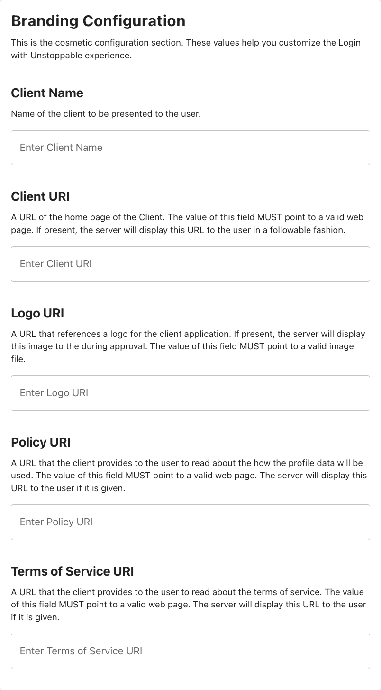
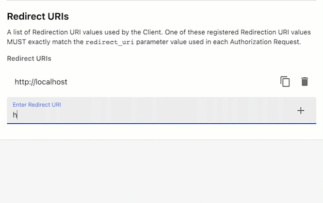
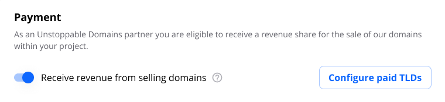
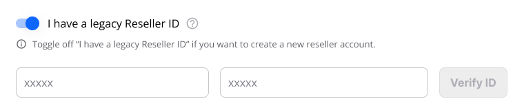
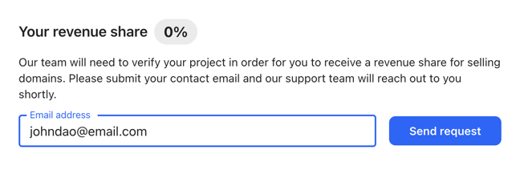
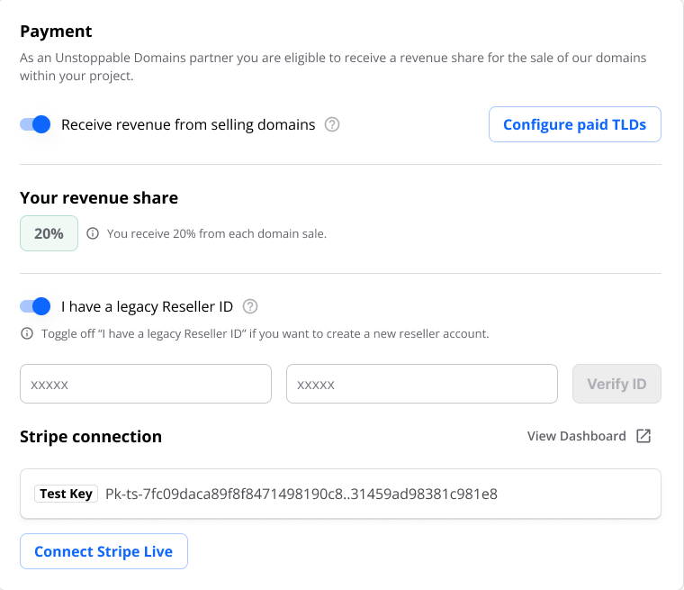
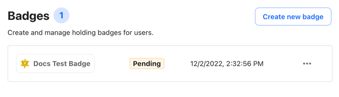
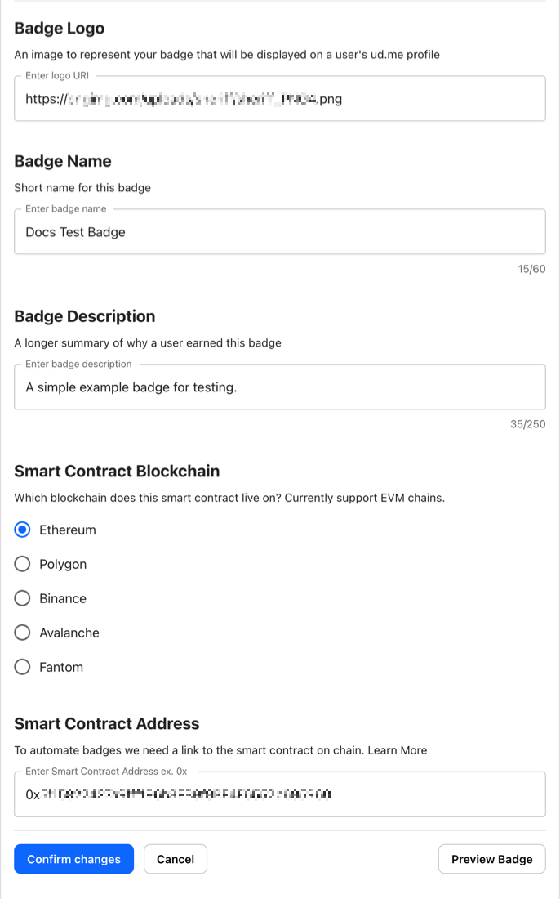
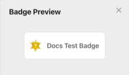
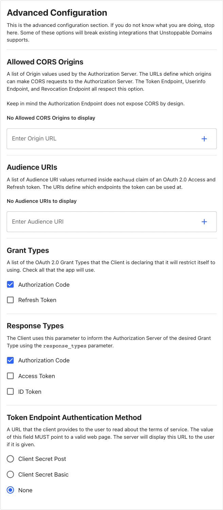

Login Client Configuration
This page explains the settings currently available for configuring a Login with Unstoppable client on the Client Management Dashboard. The default configuration for a new client works right out of the box for local development. The minimum viable configuration for the Login with Unstoppable client integrated with a live application requires custom redirect URIs.
Branding
The Branding Configuration page allows developers to customize the Login With Unstoppable UI to more closely match their own application's user experience.

The following table describes the fields for the cosmetic configuration UI section.
| Field | Description |
|---|---|
| Client Name | The client name as presented to the user; display name of the Client URI hyperlink. |
| Client URI | The default value of the hyperlink is the client redirect URI (from Client Metadata) unless this field is complete. |
| Logo URI | If provided, the client will retrieve and display an image from this location directly above the Client Name. |
| Policy URI | Policy URI will display at the bottom of the UI. |
| Terms of Service URI | Terms of Service URI will display at the bottom of the UI. |
Login
The Login configuration page contains settings and metadata specific to Login with Unstoppable integrations.
Client Metadata
The Client Metadata contains the client-specific information required to send requests to the Unstoppable authorization server. It is updated to reflect confirmed changes to client settings.
{
clientID: "xxxxxxxx-xxxx-xxxx-xxxx-xxxxxxxxxxxx",
clientSecret: "xxxxxxxxxxxxxxxxxxxxxxxxxx",
clientAuthMethod: "client_secret_xxxx",
redirectUri: "http://localhost/",
scope: "openid wallet",
}| Field | Description |
|---|---|
clientID | Your unique Client ID generated by the Client Management Dashboard. |
clientSecret | A private key known only to your application and the authorization server. Present only if Token Endpoint Authentication Method is enabled. |
clientAuthMethod | Reflects the value of Token Endpoint Authentication Method, if it is enabled. |
scope | The profile information your application will be requesting from the user. In addition to the minimum scope of openid wallet, applications can request additional scopes by adding more tokens to this string in their UAuth configuration options. |
redirectURI | The URI that the auth server will redirect to after every authorization attempt. |
Redirect URIs
Add new Redirect URIs to your client by entering them into the text input box at the end of the list and hitting return/enter or clicking the + button to the right.

Rules for Redirect URIs
The Redirect URIs follow three rules:
httpURIs must resolve to URIs hosted athttp://127.0.0.1orhttp://localhost.- URIs hosted at
http://127.0.0.1do NOT require the port to be specified. All other URIs (including those hosted athttp://localhost) require the correct port to be specified. - All https URIs specified must use the same origin (e.g.
https://unstoppabledomains.com/redirectUri1,https://unstoppabledomains.com/redirectUri2)
localhost is okay for test development, but 127.0.0.1 should be used for live environments. It is best practice to use a hardcoded IP address in a live environment instead of the local host.
TLDs
The TLDs Configuration page allows Login partners to select which TLDs (also known as domain endings or domain extensions) will be availabe to users as part of this Login client's free and paid domain flows.
View the full list of supported TLDs by clicking the Manage TLD button.
Payment
The Payment page allows Login partners to enable revenue share and receive a percentage of paid domains sold in the integrated login flow. This requires no additional code from existing login integrations. To enable this feature:
- Enable Receive revenue from selling domains

- Enter your Reseller ID. If you don't have one, you will need to create a new UD Partner account.

- Enter your email and send a revenue share request.

- Once your revenue share has been approved, click Connect Stripe Live and connect a Stripe account to start receiving payments.

Badges
The Badges configuration page allows partners to submit custom badges that can be earned and displayed on users' Unstoppable Domains profile pages. For an example of a ud.me profile with multiple badges earned see ud.me/sandy.nft.

For clients with no existing badges, the badge configuration form will be displayed by default. For clients with one or more existing badges defined, click Create new badge or click on any badge in the list to edit.

| Field | Description |
|---|---|
| Badge Logo | The URI of the image to be displayed in the ud.me profile of users who have earned this badge. |
| Badge Name | Short name for badge. 60 characters or less. |
| Badge Description | A description of the badge and the conditions required for users to earn it. 250 characters or less. |
| Smart Contract Blockchain | The blockchain on which the badge smart contract lives. Currently supports EVM chains. |
| Smart Contract Address | The address of the smart contract defining the conditions under which users can earn this badge. The contract will be checked periodically and the badge automatically added to qualifying ud.me profiles. |
Click Confirm changes to save the new or modified badge configuration or click Preview Badge to see a preview modal of the configured badge.

Advanced Configuration
The Advanced Configuration page includes options for CORS, audience URIs, grant types, response types, scopes, and token endpoint auth method.

The following section describes the fields for the Advanced configuration page.
Allowed CORS Origins
CORS is a browser protocol for accessing info from another domain. If a URI is entered, CORS is enabled for all requests from that client. Developers can enter the origin URI and specify the port. The Token, UserInfo, and Revocation endpoints all respect this option.
Audience URIs
These URIs represent the audience that is inside the access token JWTs. You get back an access token and ID token and both are JWTs. The access token is opaque.
- For the ID token, the audience are the clientIDs.
- For the access token, the audience is the resource servers; those resource server URLs are the audience for the access token.
Grant Types
There are two ways to request an access token: authorization code and refresh token.
- auth code: short lived, used to initially get the session with the user, corresponds to authorizationcode grant type
- refresh token: lives longer, used to maintain a session, receive an extra token to re-authenticate users later for a certain period of time, corresponds to the offline grant type
Response Types
There are three response types: authorization code, access token, ID token.
- auth code: more secure; returns authorization code which you exchange for authorization
- access token: implicit flow, not recommended because it is less secure; no code but you receive ID or access token
- ID token: hybrid flow; receive all three: access code, access token, and/or ID token
Token Endpoint Authentication Method
This setting configures how to send the client secret to the authorization server after you receive the authorization code; can be enabled for an extra layer of security but can only be used if your application can store secrets (e.g., node.js integrations). The client secret is stored on the server as a hash, so the authorization server doesn't actually know the client secret. See additional resources for Client Basic and Client Secret oAuth.
- client secret basic: uses http basic authentication to send over clientid:clientsecret inside the header, which is base64 encoded.
- client secret post: